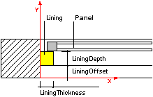
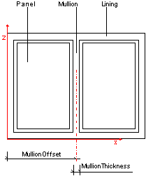
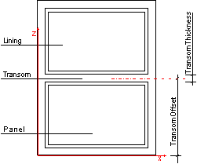
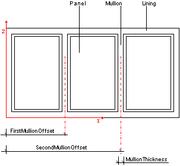
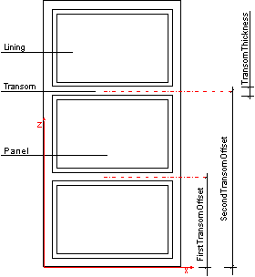

Definition from IAI: The window lining is the frame which enables
the window to be fixed in position. The window lining is used to hold the
window panels or other casements. The parameter of the window lining
(IfcWindowLiningProperties) define the geometrically relevant parameter
of the lining.
The IfcWindowLiningProperties are included in the list of
properties (HasPropertySets) of the IfcWindowStyle. More
information about the window lining can be included in the same list of the
IfcWindowStyle using the IfcPropertySet for dynamic extensions.
HISTORY New Entity in IFC
Release 2.0. Has been renamed from IfcWindowLining in IFC Release 2x.
ISSUE
See issue and change log for changes made in IFC Release
2x.
Geometry Use Definitions
The IfcWindowLiningProperties does not hold an own geometric
representation. However it defines parameter, which can be used to create the
shape of the window style (which is inserted by the IfcWindow into the
spatial context of the project).
Interpretation of parameter
The parameters at the IfcWindowLiningProperties define a standard
window lining, including (if given) a mullion and a transom (for horizontal and
vertical splits). The outer boundary of the lining is determined by the
occurrence parameter assigned to the IfcWindow, which inserts the
IfcWindowStyle.
 |
The lining is applied to all faces of the
opening reveal. The parameter are:
- LiningDepth
- LiningThickness
- LiningOffset - measured as offset to the X axis
|
 |
If the OperationType of the window style
is
- DoublePanelVertical (shown)
- TriplePanelBottom
- TriplePanelTop
- TriplePanelLeft
- TriplePanelRight
the following additional parameter apply:
- MullionThickness
- FirstMullionOffset - measured as offset to the Z axis (in XZ
plane)
|
 |
If the OperationType of the window style
is
- DoublePanelHorizontal
- TriplePanelBottom
- TriplePanelTop
- TriplePanelLeft
- TriplePanelRight
the following additional parameter apply
- TransomThickness
- FirstTransomOffset- measured as offset to the X axis (in XZ
plane)
|
 |
If the OperationType of the window style
is
the following additional parameter apply
|
 |
If the OperationType of the window style
is
the following additional parameter apply
|
NOTE
- All offsets are given as a normalized ratio measure.